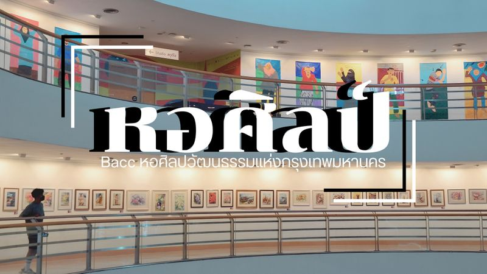
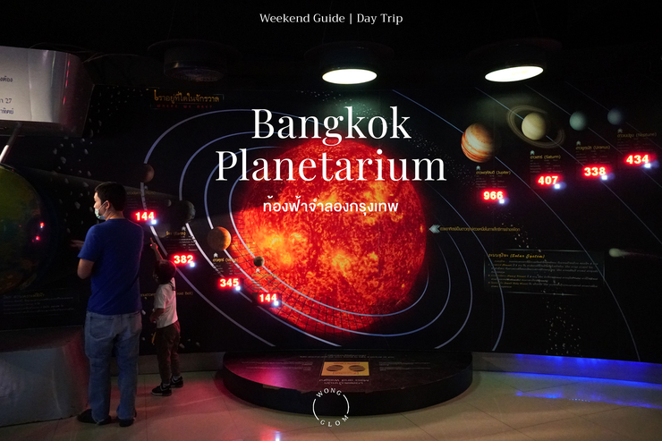

พิพิธภัณฑ์สัตว์น้ำ |
หอศิลป์ |
ท้องฟ้าจำลอง |
|---|---|---|
 |
 |  |
| พิพิธภัณฑ์สัตว์น้ำซีไลฟ์แบงคอก (ซีไลฟ์แบงคอก) หรือ สยามโอเชียนเวิลด์ (SEA LIFE Bangkok Ocean World) เป็นพิพิธภัณฑ์สัตว์น้ำใต้ดิน พื้นที่รวม 10,000 ตารางเมตร เป็นจุด หมายปลายทางที่ยอดเยี่ยมในการหลีกหนีจากความเร่งรีบและคึกคักของกรุงเทพฯ มีสัตว์ทะเล มากกว่า 400 สายพันธุ์และปลา 30,000 ตัวที่จัดแสดง อุโมงค์ชมวิว 270 องศาช่วยให้คุณใกล้ ชิดกับฉลามได้อย่างใกล้ชิด | หอศิลป์กรุงเทพ หรือ หอศิลปวัฒนธรรมแห่งกรุงเทพมหานคร (Bangkok Art and Culture Centre) เป็นพิพิธภัณฑ์ศิลปะ ที่ตั้งอยู่ที่สี่แยกปทุมวันนั่นเองค่ะ ที่นี่จัดตั้งขึ้นเพื่อเป็นแหล่งรวม ของกลุ่มศิลปิน เพื่อพบปะ แลกเปลี่ยนความคิด แนวการทำงานศิลป์ต่างๆ ทั้งยังมีนิทรรศการจัด แสดงหมุนเวียนเปลี่ยนไปในแต่ละช่วง ใครที่อยากมาหาแรงบันดาลใจ เสพงานศิลป์ อินกับงา นอาร์ท | กรุงเทพมหานคร เมืองฟ้าอมรที่แวดล้อมไปด้วยตึกสูงกับแสงไฟสว่างไสว น้อยคนนักที่จะได้ สัมผัสหรือดื่มด่ากับความงดงามของดวงดาวบนฟากฟ้า อ๊ะ ๆ แต่ใครบอกว่ากรุงเทพฯ ไม่มี ดวงดาว ขอเถียงนะ เพราะจริง ๆ แล้วกรุงเทพฯ มีดวงดาวเต็มท้องฟ้า ใช่แล้ว ! เรากำลังพูดถึง ศูนย์วิทยาศาสตร์เพื่อการศึกษา ท้องฟ้าจําลองกรุงเทพ หรือที่เรียกสั้น ๆ ว่า ท้องฟ้าจําลอง แหล่งส่องจักรวาลแบบเต็ม ๆ ตาของคนเมืองกรุง
|
อ่านเพิ่มเติม |
อ่านเพิ่มเติม |
อ่านเพิ่มเติม |
ไปด้านบน